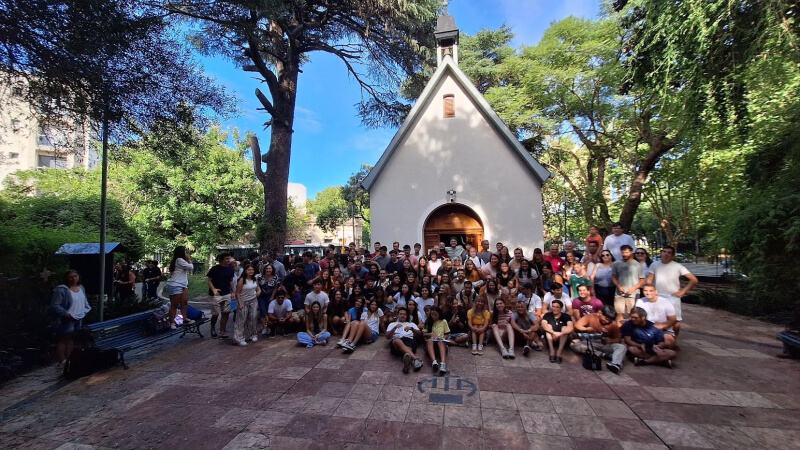
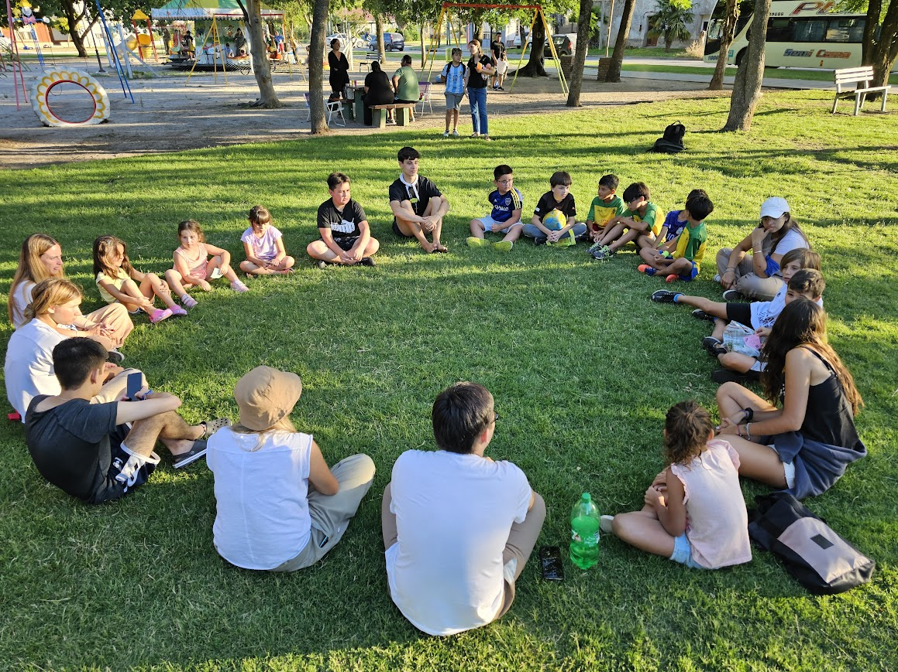

Voluntariado y Comunidad
Organizador - Schoenstatt
2021 - Actualidad
Participo activamente en voluntariados vinculados a las misiones de Schoenstatt, donde desarrollo tareas solidarias y de acompañamiento en distintas comunidades. Estas experiencias me han permitido fortalecer valores como el compromiso, la empatía y el trabajo en equipo, colaborando en actividades de servicio, organización y apoyo a personas en distintas realidades. A través de las misiones, también he adquirido habilidades de comunicación, liderazgo y adaptación, enfrentando distintos desafíos en contextos diversos. Este tipo de participación refleja mi vocación por ayudar a los demás y mi interés por contribuir positivamente en la sociedad desde una mirada humana y comprometida.



← Desliza para ver más fotos →